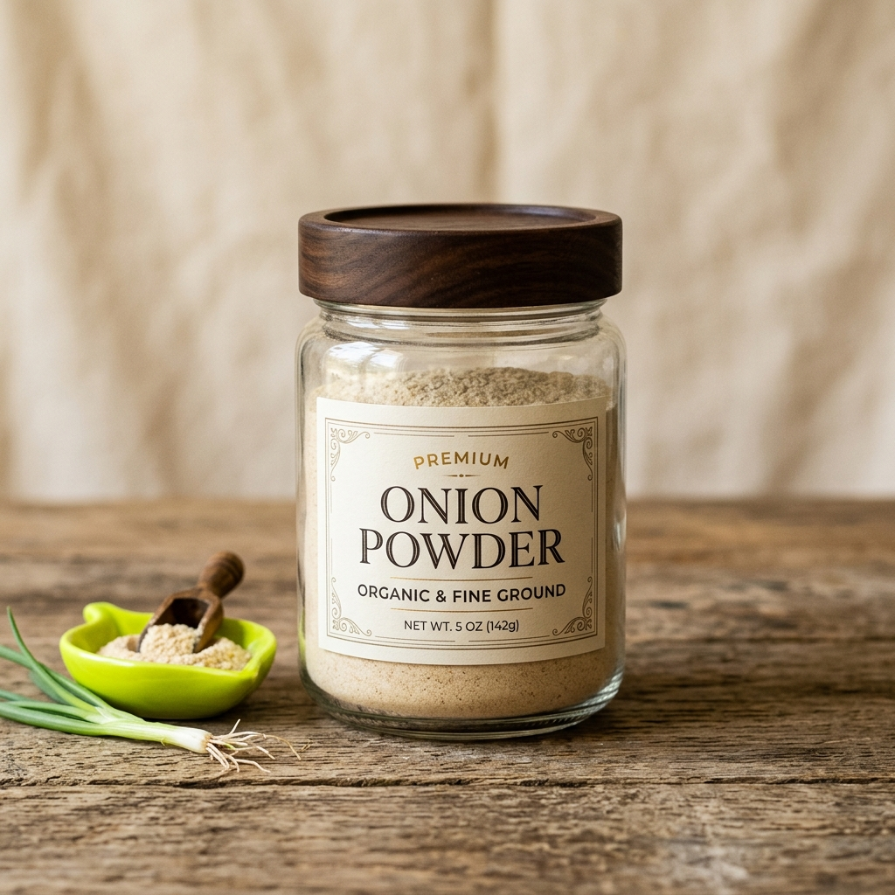
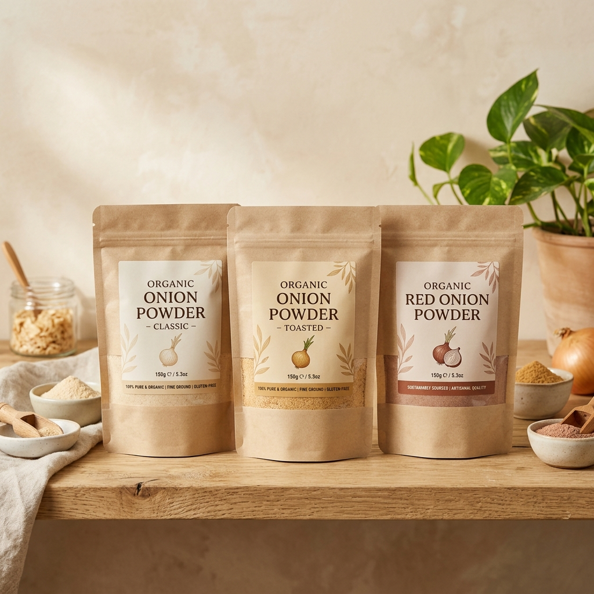
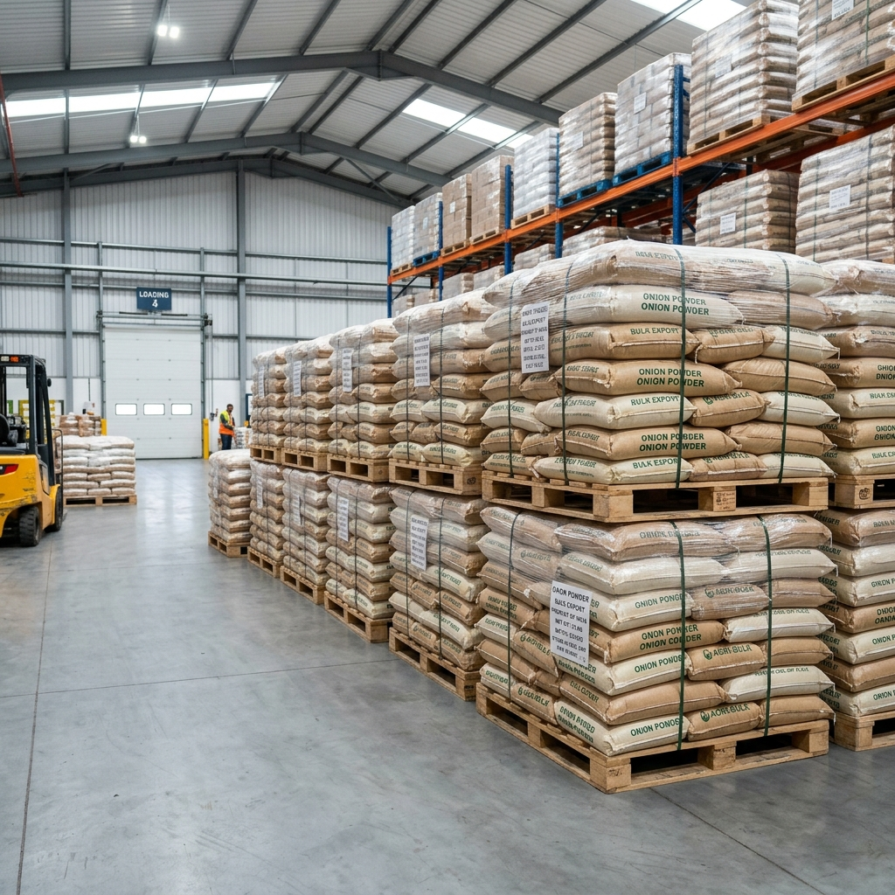

Discover our range of premium onion products, meticulously crafted to elevate global culinary experiences.
At Girnari Export, we take immense pride in manufacturing and supplying premium onion powder that meets the highest standards of the global food industry. Our manufacturing process ensures that the strong, savory flavor, alongside the essential nutritional benefits of fresh Indian onions, is perfectly captured and preserved. As a leading manufacturer, we understand the critical importance of maintaining a consistent flavor profile, which is why our food grade products undergo rigorous testing before dispatch.
We specialize in bulk export solutions tailored for large-scale operations. From food processing companies to international spice distributors, our clients rely on us for consistent quality and reliable supply chains. Our advanced milling techniques yield a finely textured powder that boasts exceptional solubility, making it the ideal ingredient for soups, sauces, ready-to-eat meals, snacks, and spice blends.
Sustainability and purity are at the core of our operations. We offer certified organic variants grown without the use of synthetic pesticides or fertilizers, providing a clean-label ingredient for health-conscious consumers. Every product that leaves our facility reflects our dedication to export quality standards, fully complying with international food safety regulations.

Our flagship product, finely milled for the perfect flavor release and solubility in any dish. Ideal for enhancing savory recipes across the globe.

Certified organic onion powder grown without synthetic pesticides, for the conscious consumer and clean-label food manufacturers.

Tailored packaging and high-volume solutions designed specifically for large-scale manufacturers and global distributors.